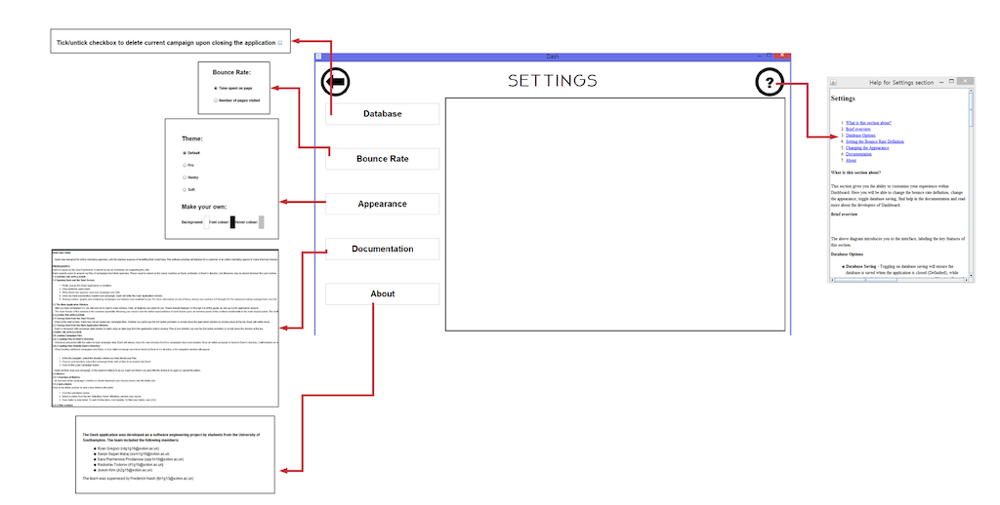
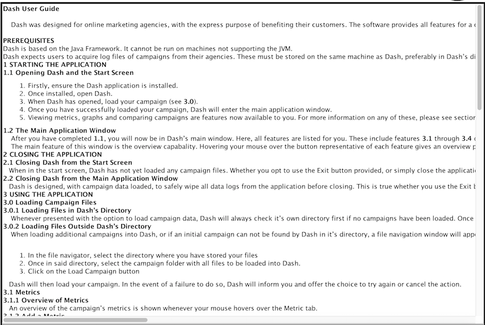
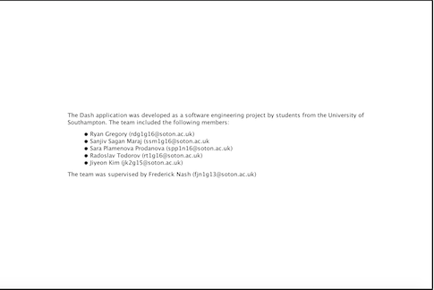

This section gives you the ability to customise your experience within Dashboard. Here you will be able to change the bounce rate definition, change the appearance, toggle database saving, find help in the documentation and read more about the developers of Dashboard.

The above diagram introduces you to the interface, labelling the key features of this section.
Dashboard allows you as a user to define how bounce rate is calculated, with the choice between:
Dashboard allows the customisation of themes for those who find the default colour scheme unpleasing, or plain, or simply seek some change in their life. Dashboard is pre-loaded with 4 default themes:
Furthermore, if none of these default themes are for you, Dashboard allows the creation of custom themes by selection of Font, Background and Hover colours.
The image below shows: a custom theme, soft theme, pro theme and husky theme

Here you will find the User Manual which is a comprehensive overview of the application on top of the in-client help provided in the help buttons. And furthermore, if you cannot find your answers in the help sections nor the user manual then we provide a "Customer Questions" section which allows you to enter your email and question.

Here there is information about the Developers behind Dashboard! ... Oh, and the copyrights. But mainly information about us! The lovely Developers! ... but trademarks too and Terms and Conditions.